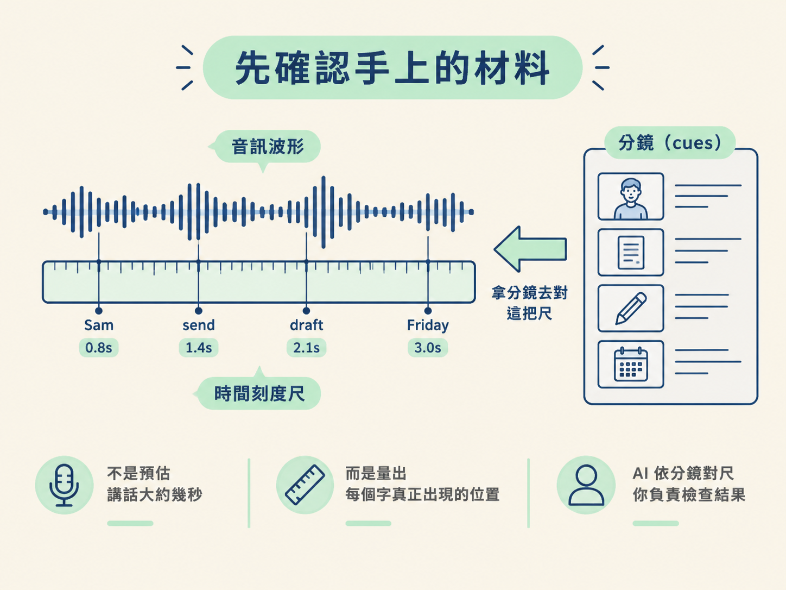
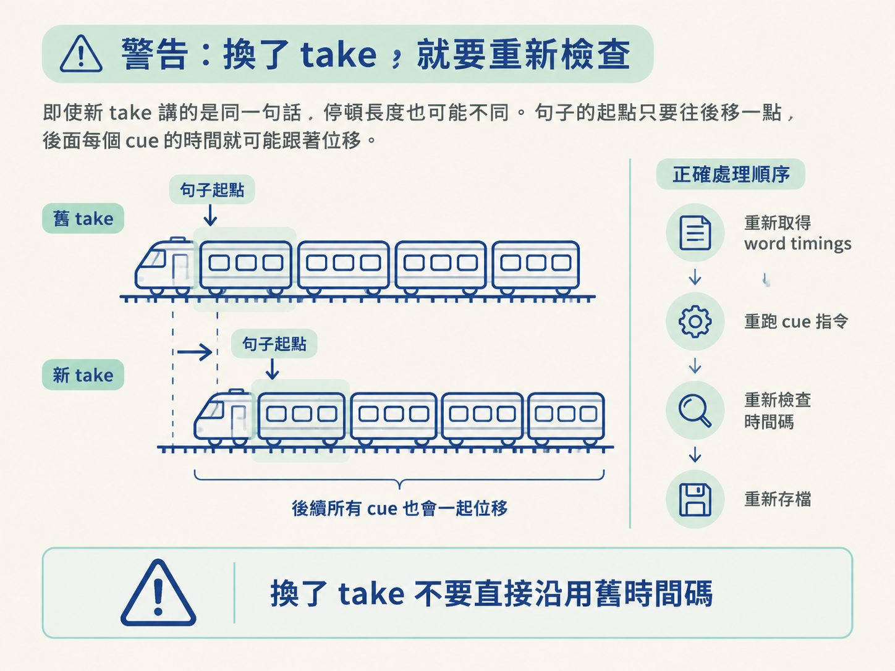

這一步是整條流程的收尾：你已經審過分鏡，也有第二節產生的 word timings（每個字實際落在錄音第幾秒的資料）。接下來，請 AI 把分鏡中的句子對上這些真實時間，再由你檢查結果，最後把完成的時間與視覺計畫存到旁白旁邊。
做完後，你會得到一份每個 beat 都有實際開始與結束時間的 cues，下一節生成場景時可以直接讀取。這一步不需要你手動替每句話猜秒數；你要做的是確認 AI 的匹配合理，特別是 Sam、Friday 這些上一節特別檢查過的字。
開始前，請準備好兩份東西：
這裡可以把 word timings 想成錄音的尺：它不是預估「這句話大概講兩秒」，而是量出每個字真正出現的位置。接下來，AI 要拿分鏡去對這把尺；你則負責檢查量出來的結果。

請 AI 將審過的句子對到實際測得的 word timings。
在準備版工作區裡，使用專門的 cue 指令，讓它把每個 beat 的 spoken words 與帶時間的字檔比對，算出每個 cue 實際應該出現的時間。
AI 動手：執行 cue 指令，完成句子與 word timings 的匹配。
你檢查：確認它使用的是審過的句子與正確的錄音時間資料，而不是自行猜測時間。
檢查編譯後的 cue 時間碼。
匹配完成後，每個 cue 都會有開始時間與結束時間。先抽查幾個關鍵 beat，看看它們的時間落點是否合理。
例如，檢查包含 Sam 或 Friday 的 beat：這些字在錄音中實際出現的時刻，應該落在 cue 所標示的範圍內。你不需要逐字重新計算，但要確認時間沒有明顯提前、延後，或對到錯的句子。
AI 動手：產生編譯後的 cue 時間碼。
你檢查：抽查關鍵 beat 的開始與結束時間，確認畫面應該出現的時刻，確實跟旁白說到那句話的時刻對得上。
把確認過的時間與視覺計畫存到旁白旁邊。
確認沒有問題後，將完成的 cues 與視覺計畫放在旁白旁邊。這樣錄音、逐字稿、時間資料與分鏡計畫就會放在同一個地方，下一節生成場景時可以直接取用，不必再到不同位置拼資料。
AI 動手：儲存完成時間對齊的 cues 與視覺計畫。
你檢查：打開旁白旁邊的檔案，確認每個 beat 都同時看得到它要呈現的內容、觀眾要注意的重點，以及實際的開始與結束時間。
打開存好的計畫時，每個 beat 應該不只描述「出現什麼」和「觀眾注意什麼」，還會標出「它在錄音的第幾秒發生」。例如，包含 Sam 或 Friday 的 beat，會有一段可以回到實際錄音核對的時間範圍。
這表示「腳本 → 時間 → 計畫」已經接起來了。下一節生成場景時，AI 讀到的不是一份只靠想像的分鏡，而是一份有錄音時間作為依據的場景指令。
如果之後換了旁白 take，不要直接沿用原本的時間碼。
即使新 take 講的是同一句話，停頓長度也可能不同。句子的起點只要往後移一點，後面每個 cue 的時間就可能跟著位移，就像火車前面的一節車廂移動，後面的車廂也會一起改變位置。

因此，若換了 take，請依序做以下處理：
這也是把時間交給實際錄音量測的原因：錄音一變，時間就重新量；不要靠手工維護一長串可能已經失準的時間戳記。
完成後，請確認你能在旁白旁邊找到一份時間對齊好的 cues，並且每個 beat 都具備：
如果抽查 Sam、Friday 等關鍵字時，cue 時間能對回錄音中的實際位置，就代表這一步完成。接下來，AI 會拿這份計畫生成場景；你要檢查的，則是生成的畫面有沒有按照這份時間對齊的計畫，把旁白解釋清楚。